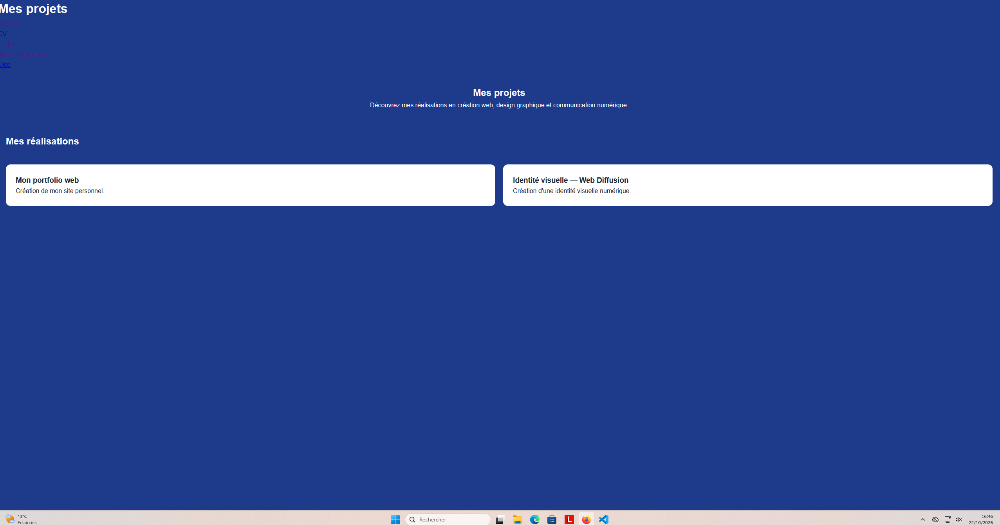
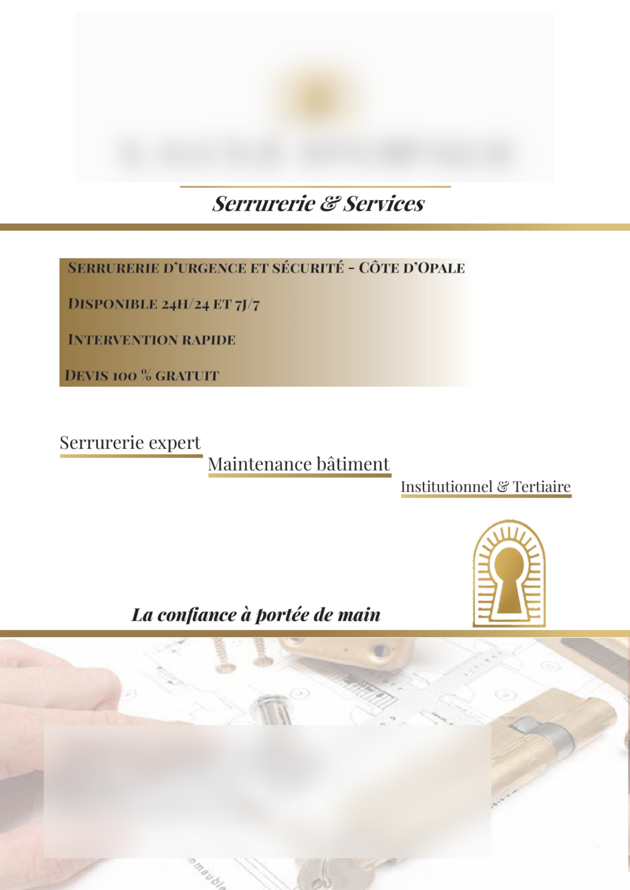

Mon portfolio web
Création de mon site personnel.
Mon portfolio
Découvrez mes réalisations en création web, design graphique et communication numérique.

Création de mon site personnel.
Création d'une identité visuelle numérique.

Réalisation d'un support de communication de deux pages avec Adobe InDesign. Travail sur la mise en page, la typographie et la hiérarchie visuelle.
Voir le projet PDF